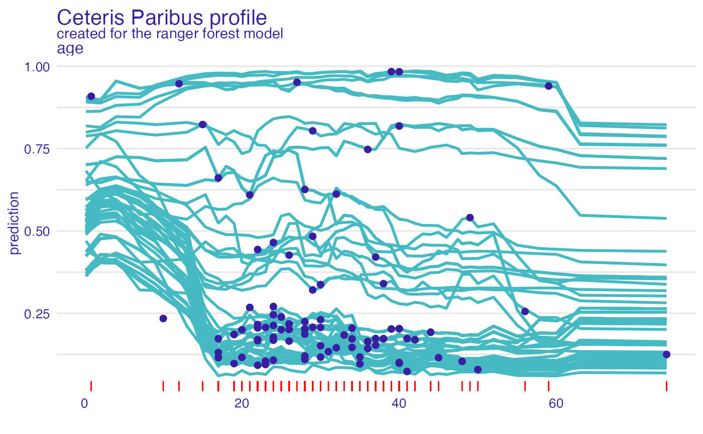
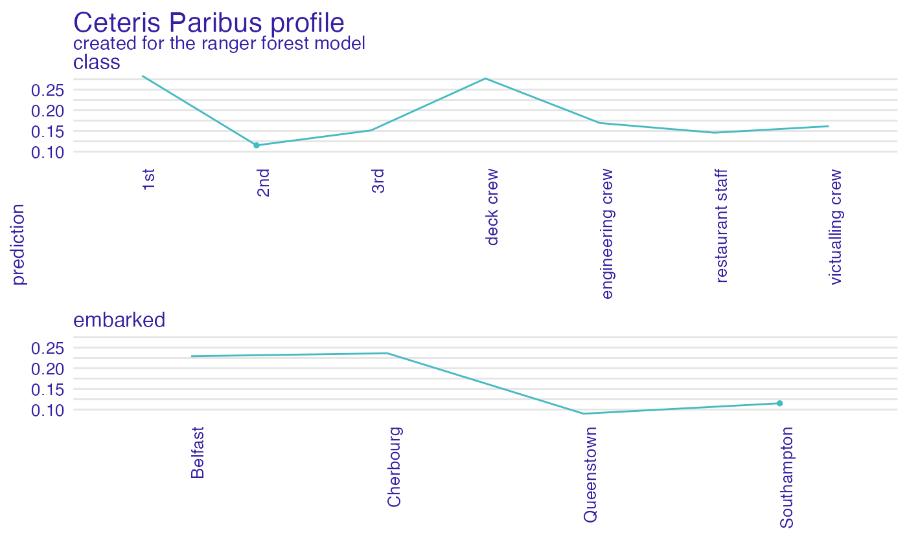

Function plot.ceteris_paribus_explainer plots Individual Variable Profiles for selected observations.
Various parameters help to decide what should be plotted, profiles, aggregated profiles, points or rugs.
Find more detailes in Ceteris Paribus Chapter.
# S3 method for ceteris_paribus_explainer plot( x, ..., size = 1, alpha = 1, color = "#46bac2", variable_type = "numerical", facet_ncol = NULL, variables = NULL, title = "Ceteris Paribus profile", subtitle = NULL, categorical_type = "lines" )
Arguments
| x | a ceteris paribus explainer produced with function |
|---|---|
| ... | other explainers that shall be plotted together |
| size | a numeric. Size of lines to be plotted |
| alpha | a numeric between |
| color | a character. Either name of a color or name of a variable that should be used for coloring |
| variable_type | a character. If |
| facet_ncol | number of columns for the |
| variables | if not |
| title | a character. Plot title. By default "Ceteris Paribus profile". |
| subtitle | a character. Plot subtitle. By default |
| categorical_type | a character. How categorical variables shall be plotted? Either |
Value
a ggplot2 object
References
Explanatory Model Analysis. Explore, Explain and Examine Predictive Models. https://pbiecek.github.io/ema
Examples
library("DALEX") model_titanic_glm <- glm(survived ~ gender + age + fare, data = titanic_imputed, family = "binomial") explain_titanic_glm <- explain(model_titanic_glm, data = titanic_imputed[,-8], y = titanic_imputed[,8], verbose = FALSE) cp_rf <- ceteris_paribus(explain_titanic_glm, titanic_imputed[1,]) cp_rf#> Top profiles : #> gender age class embarked fare sibsp parch _yhat_ _vname_ #> 1 female 42.0000000 3rd Southampton 7.11 0 0 0.6667679 gender #> 1.1 male 42.0000000 3rd Southampton 7.11 0 0 0.1827040 gender #> 11 male 0.1666667 3rd Southampton 7.11 0 0 0.2352754 age #> 1.110 male 2.0000000 3rd Southampton 7.11 0 0 0.2327665 age #> 1.2 male 4.0000000 3rd Southampton 7.11 0 0 0.2300508 age #> 1.3 male 7.0000000 3rd Southampton 7.11 0 0 0.2260191 age #> _ids_ _label_ #> 1 1 lm #> 1.1 1 lm #> 11 1 lm #> 1.110 1 lm #> 1.2 1 lm #> 1.3 1 lm #> #> #> Top observations: #> gender age class embarked fare sibsp parch _yhat_ _label_ _ids_ #> 1 male 42 3rd Southampton 7.11 0 0 0.182704 lm 1# \donttest{ library("randomForest") model_titanic_rf <- randomForest(survived ~., data = titanic_imputed)#> Warning: The response has five or fewer unique values. Are you sure you want to do regression?explain_titanic_rf <- explain(model_titanic_rf, data = titanic_imputed[,-8], y = titanic_imputed[,8], label = "Random Forest v7", verbose = FALSE) selected_passangers <- select_sample(titanic_imputed, n = 100) cp_rf <- ceteris_paribus(explain_titanic_rf, selected_passangers) cp_rf#> Top profiles : #> gender age class embarked fare sibsp parch _yhat_ #> 515 female 45 2nd Southampton 10.1000 0 0 0.84768669 #> 515.1 male 45 2nd Southampton 10.1000 0 0 0.09095336 #> 604 female 17 3rd Southampton 7.1701 1 0 0.45875606 #> 604.1 male 17 3rd Southampton 7.1701 1 0 0.11290834 #> 1430 female 25 engineering crew Southampton 0.0000 0 0 0.70492533 #> 1430.1 male 25 engineering crew Southampton 0.0000 0 0 0.23715128 #> _vname_ _ids_ _label_ #> 515 gender 515 Random Forest v7 #> 515.1 gender 515 Random Forest v7 #> 604 gender 604 Random Forest v7 #> 604.1 gender 604 Random Forest v7 #> 1430 gender 1430 Random Forest v7 #> 1430.1 gender 1430 Random Forest v7 #> #> #> Top observations: #> gender age class embarked fare sibsp parch _yhat_ #> 515 male 45 2nd Southampton 10.1000 0 0 0.09095336 #> 604 male 17 3rd Southampton 7.1701 1 0 0.11290834 #> 1430 male 25 engineering crew Southampton 0.0000 0 0 0.23715128 #> 865 male 20 3rd Cherbourg 7.0406 0 0 0.11564218 #> 452 female 17 3rd Queenstown 7.1408 0 0 0.65160118 #> 1534 male 38 victualling crew Southampton 0.0000 0 0 0.15395782 #> _label_ _ids_ #> 515 Random Forest v7 1 #> 604 Random Forest v7 2 #> 1430 Random Forest v7 3 #> 865 Random Forest v7 4 #> 452 Random Forest v7 5 #> 1534 Random Forest v7 6plot(cp_rf, variables = "age") + show_observations(cp_rf, variables = "age") + show_rugs(cp_rf, variables = "age", color = "red")#> gender age class embarked fare sibsp parch survived #> 515 male 45 2nd Southampton 10.1 0 0 0cp_rf <- ceteris_paribus(explain_titanic_rf, selected_passangers) plot(cp_rf) + show_observations(cp_rf)#>#>#>